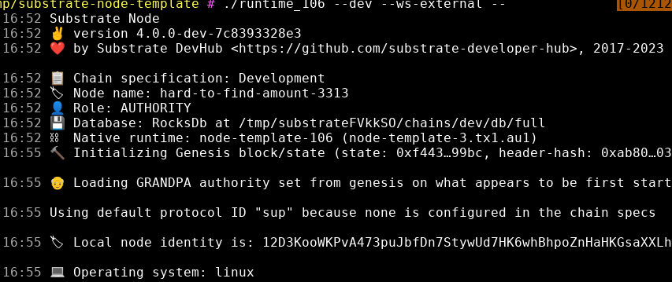
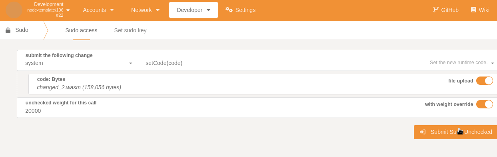

Check added and changed storage items after a runtime upgrade
is a crucial part of doing runtime upgrades. Their are several ways to detect storage changes with Uptest.
The simpliest way is to follow our code example upgrade_change_diff:
Spin up a substrate based node:
git clone https://github.com/substrate-developer-hub/substrate-node-template
cd substrate-node-template/ && cargo build --release
./target/release/node-template --dev --ws-external --

Run our code example:
$ git clone https://github.com/uptest-sc/uptest/ && cd uptest
$ cargo run -p uptest-examples --example upgrade_change_diff
Finished dev [unoptimized + debuginfo] target(s) in 0.26s
Running `target/debug/examples/upgrade_change_diff`
Connected to: "node-template" Runtime version: 106
Waiting for custom event to be triggered
Make changes to the node repo and change spec_version:
Make the changes you wish to do, in this example we have changed one storage map and added a storage value to the default template module you can find in the substrate-node-template repo.
Compile the node with the saved changes and get the target/release/wbuild/*.compressed.wasm file.
Submit the runtime upgrade(in our example with the Sudo key and polkadot.js.apps webui):

Head back to your terminal and you should see that we are able to detect that our custom event has been triggered and we should get the following output:
Event detected in block: 0xf28159f44e72b1859a1b5fb1ff210401605b100300ed53058b939ad2c817faf4
Having a coffee break before next block...
Scanning the new metadata for changes
Runtime upgraded from version: 106 to new version: 107
Changed StorageMap: "SomeMapthree" in Pallet: "TemplateModule" to the new type: Primitive(U32)
Pallet: "TemplateModule" has added a StorageValue with the type: Primitive(Bool)
External links:
https://github.com/substrate-developer-hub/substrate-node-template
Uptest github